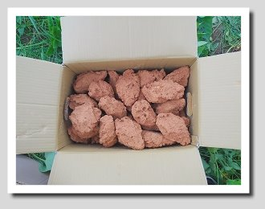
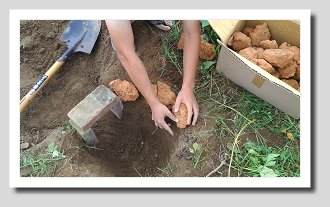
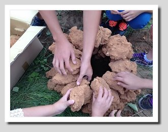
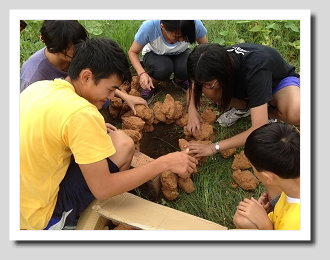
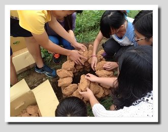
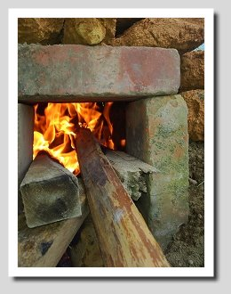
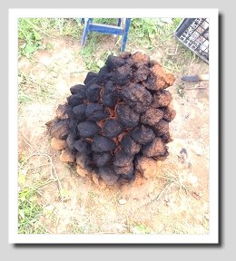
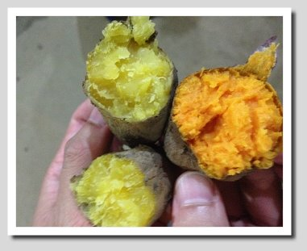

焢窯，亦可寫台語諧音的「控窯」，是台灣盛行的鄉土活動。在農地上，用土塊堆疊成塔，中間透空燒放柴火，待土塊燒成焦紅後，將食物放進去，再把土堆搗毀埋實，悶熟食物。在早年物資貧乏的時代，地瓜是焢窯活動的主要食材。因此，「焢窯」可說是許多成年人的童年回憶，也是許多現代父母喜歡在假日休閒時帶小朋友走向鄉野體驗的活動之一。
每年的金山甘藷節，都會有上千名的遊客湧入活動會場共襄盛舉，目的多半是為了體驗焢窯的活動。無論大人、小孩，在歷經堆窯、燒窯、埋土、悶熟過程，最後吃到成果－－自己親手烤出來的地瓜，都會露出欣慰的笑容。然而，焢窯活動雖有趣，但卻是一個要需要智慧、耐心、細心及團隊合作的一個活動，我們「地瓜金正讚」當然也要體驗一次，果然，我們堆的窯，堆到一半，垮了！重新再起窯，燒到一半，垮了！再重新起個窯，小心翼翼，終於成功。但是挖出地瓜，一個不小心，破了個洞！就這樣一步一步，終於嚐到香香甜甜的窯烤地瓜，果然，「金山地瓜金正讚」！
焢窯需要的器材
兩箱窯土、木材、圓鍬、磚塊3塊、地瓜其中「窯土」是使用紅土加水混和稻殼，由人工的方式將其分成兩個拳頭的大小，放置在太陽底下曝曬，大約需要4~7天的時間將其曬乾，再供焢窯使用。

步驟一：使用圓鍬，挖出一個直徑大約30~35公分、深度約15~20公分的窯洞。
步驟二：判定風向，使用磚塊將窯門，設立在面風處。

步驟三：將土塊沿著窯洞的邊緣環繞排列，一圈一圈地內縮，最終堆成土窯。（在排列堆疊的過程中，請注意不要太過著急，找到平衡點才不會塌掉，避免前功盡棄。）





步驟四：生火，可先將細小的木材放置於最下方，再把最粗的木材放置於旁，把中型的才火置於上方。注意，請以交錯的方式排列，這樣有助於空氣流通與燃燒，也不會使濃煙燻到自己。

步驟五：燒至土塊呈現紅紫色，此時的溫度極高，請帶好手套使用夾子將窯土上方的土塊移開，洞口大約可以將地瓜丟下去的大小即可。

步驟六：投放完地瓜後（也可以放入其他食材），將土窯以圓鍬推倒、拍碎，用土將其覆蓋以達到保溫的效果

步驟七：40~60分鐘後即可「開窯」
步驟八：開窯時請小心將土塊移開，因為此時地瓜已經熟了，很容易就會被刮傷，在尋找地瓜時要輕柔一些。

享用辛苦後的烤地瓜

2014.10.05於金山區重和里六股林口七鄰3-2號
十月五號，我們安排了一次的焢窯體驗活動。由於大伙們當中有幾個人都是「新手上路」，焢窯對這幾人來說算是初體驗。當然也有幾位是曾經焢過窯的，但是卻並不熟練。土窯的堆砌，是一件工程浩大的工作，我們必須使用每一塊窯土與窯土之間的咬合力，向上堆疊，使其慢慢內縮，最後成為塔的形狀。
因此在堆疊的過程中我們都非常地小心翼翼，可惜人算不如天算啊！因為我們之間沒有將土窯搭得非常穩固，出現了豆腐渣工程，生完火不到五分鐘內，就分崩離析了！由此可知，只要一個小地方出了差錯，將會造成嚴重的後果。但這並不讓我們感到氣餒，而是使我們意識到要團隊合作、謹慎小心。於是我們決定另起爐灶，這一次，我們吸取了前面慘痛的教訓，隊員們之間互相配合、齊心協力，一步步扎實地完成每個細節。
看似簡單的一件事，其實之中含有的玄機很多，推土窯不僅僅是為了吃到烤地瓜。而是一種學習，一個團隊要完成一件事情，這之中必須要有大家的配合與努力，最重要的一個不放棄的心。在過程中我們會感到挫敗、打退堂鼓，但只要我們堅持下去，熬過了所有的困難，我們就能嚐到那最為甜美的「烤地瓜」。